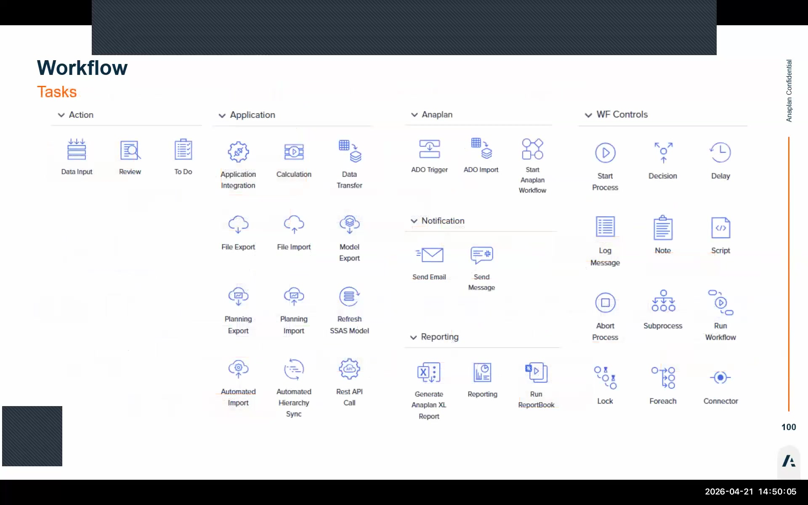
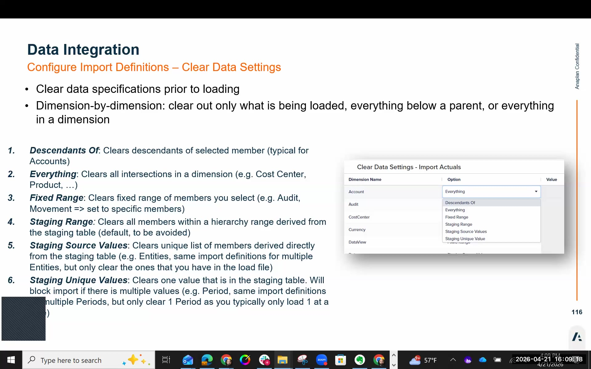

Data Integration
Staging tables, member mappings, import definitions, clear data settings, and open periods
The 4-Step Data Integration Process
Open Periods
Before any data can be loaded, the target period must be added to the Open Periods table (Maintain → General Configuration → Open Periods). FCR works the opposite of most consolidation systems — periods start closed and must be explicitly opened. Removing a period from the table closes it.
Open the period first, before building your integration pipeline. Nothing in the integration setup will fail if the period is closed, but your test runs will produce "no data loaded" errors until the period is open.
Create Staging Tables
Staging tables are SQL tables inside FCR that act as a temporary landing zone for incoming data. Each staging table corresponds to a source GL system (best practice: one table per source).
Column naming rules:
- Column names must exactly match the source file headers — including case
- Dimension columns: use VARCHAR data type
- Amount/value columns: use FLOAT data type
- A mismatch between the file header and staging table column name = import failure
Configure Member Mappings
Member mappings translate source system values (e.g., GL account codes from an ERP) into FCR dimension member names. Not all sources require mappings — if the source values already match FCR member names exactly, you can use Match Name instead.
Mapping types available:
| Type | How It Works | Use Case |
|---|---|---|
| Exact | Source value matches target exactly | Simple direct account-to-account mapping |
| Wildcard | Pattern matching (e.g., 1* maps all accounts starting with 1) |
Whole account ranges using a prefix |
| N (Non-sequential) | Multiple individual source values → single target member | Consolidate multiple GL codes into one FCR account |
| Range | Numeric range (e.g., 1000–1099 → Account X) | Map a consecutive range of GL codes to one FCR account |
AI-powered mapping suggestions are on the FCR roadmap. The system will analyse source values and recommend mappings by comparing them to target dimension members. This will significantly reduce the time needed to build mapping tables on first implementations.
Configure Import Definitions
Import definitions tie everything together: they link a staging table to the FCR data model and define how each column in the staging table maps to a dimension member. Each column in the import definition has a field mapping type:
| Mapping Type | How It Works | Typical Use |
|---|---|---|
| Fixed | Always maps to the same member, regardless of data content | Scenario = Actuals, DataView = Value, Audit = Source GL |
| Match Name | Maps by matching the source value to the dimension member's Name (ID) | Entity, Period (when source format matches), Intercompany |
| Map | Uses a member mapping table to transform source values to target members | Account dimension when chart of accounts differs from FCR; sign flips |

Clear Data Settings — Critical Configuration
By default, import definitions are additive — when data is re-loaded, the new values are added on top of existing values. This means re-running an import without Clear Data configured will double your trial balance figures. This is one of the most common errors on a first FCR implementation.
Always configure Clear Data Settings in every import definition before you run it for the first time.
Six Clear Data options are available:
| Option | What It Clears |
|---|---|
| Descendants Of | Clears all data for descendants of a specified dimension member |
| Everything | Clears all data in the model (use with extreme caution) |
| Fixed Range | Clears data for a specified fixed set of dimension members |
| Staging Range | Clears data for the range of values present in the staging table |
| Staging Source Values | Clears data matching the exact source values in the staging table |
| Staging Unique Values | Clears data for the unique combination of dimension values found in the staging table — most common production setting |
Staging Unique Values using the Audit and Period dimensions is the most common production setting. This ensures that re-loading a period's trial balance for the same audit member (e.g., Source GL) first clears the existing data for that period/audit combination before loading the new data — preventing accumulation across re-runs.

Open Periods — The Opposite of What You Expect
FCR's period management works differently from most consolidation systems. The key points:
- Periods start closed — no data can be loaded until you explicitly open a period
- Opening a period = adding a row to the Open Periods table (Maintain → General Configuration → Open Periods)
- Closing a period = removing that row from the table
- Multiple periods can be open simultaneously — this is normal during historical data loads
- You can have many periods open at once; adding periods is safe and does not trigger any calculations
Automation Options
For production deployments, trial balance loading should be automated rather than run manually. FCR supports several integration approaches:
| Method | Best For |
|---|---|
| ADO (Anaplan Data Operations) | Preferred method for FPC (combined IFP + FCR) customers — included in FPC licensing. Tightest workflow integration. |
| Flat files + Workflow | Simple file-drop approach; data file is dropped in a monitored location and a workflow picks it up automatically. |
| REST API | Programmatic integration with any source system; works with data lake architectures (S3, Azure Data Lake, etc.). |
| FTPS | Secure file transfer; drop file to FTPS endpoint, FCR picks it up on a schedule. |
| Azure data integration tools | Azure Data Factory and similar tools can orchestrate the full data pipeline into FCR. |
Rather than running import definitions manually (ad-hoc), build a reusable workflow process for each data load. The workflow can include: Open Period check, run import, run validation report, send notification. This ensures a consistent, auditable process every period-end — and means finance users don't need to understand the integration layer at all.